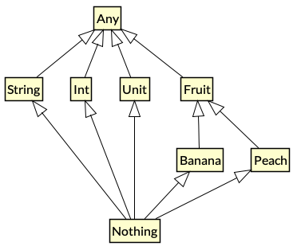
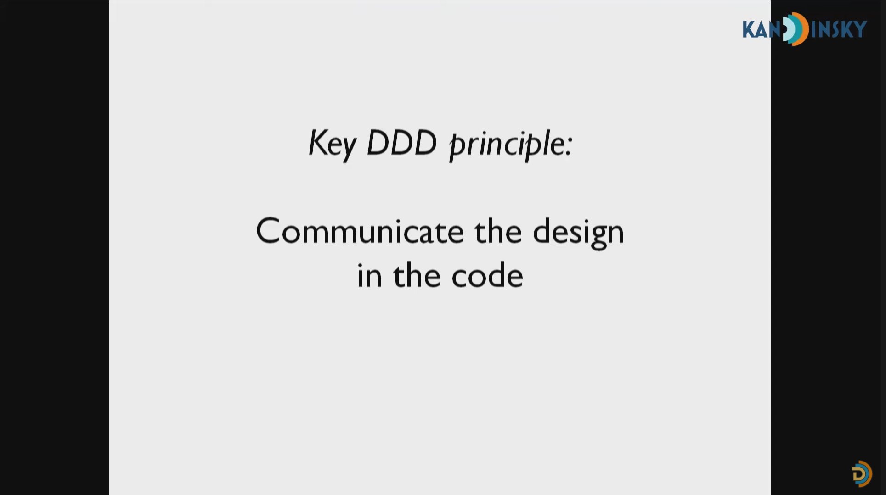

AnyNothingUnitThe root of the Kotlin class hierarchy.
➡️ Every Kotlin class has Any as a superclass.
fun main() {
val num: Int = 5
val anyVal: Any = num
println("$anyVal") // 5
println("${num.plus(10)}") // 15
println("${anyVal.plus(10)}") // Error: Unresolved reference
}
Any is similar to the Object class in Java
➡️ Any only has 3 functions
fun main() {
val anyVal: Any = Any()
val anyVal2: Any = Any()
val objVal: Object = Object()
println("${anyVal::class}") // class java.lang.Object
println("${objVal::class}") // class java.lang.Object
println("${anyVal.equals(anyVal2)}") // false
println("${anyVal == anyVal2}") // false
// A.equals(B) is the same as (A == B) if A is a non-null type
println("${anyVal.hashCode()}") // 87285178
println("${anyVal.toString()}") // java.lang.Object@533ddba
println("$anyVal") // java.lang.Object@533ddba
}
Nothing is used to represent a value which will never exist.
What kinds of expression evaluate to Nothing?
throw an exceptionpublic inline fun TODO(): Nothing = throw NotImplementedError()
fun doOps(op: String): String = when (op) {
"sum" -> "Sum up the values..."
"square" -> TODO() // Note the type inference is not broken
else -> "Do nothing."
}
fun main() {
val result: String = doOps("square") // kotlin.NotImplementedError: An operation is not implemented.
println("$result") // unreachable code
}
The type with only one value: the Unit object.
🔍 This type corresponds to the void type in Java.
Use Unit as return type of a function
import java.io.FileNotFoundException
fun printException(e: Exception): Unit = when (e) {
is IllegalArgumentException -> println("The input is invalid: $e")
is FileNotFoundException -> println("Cannot find the file: $e")
else -> println("Other exception: $e")
}
fun main() {
val e = IllegalArgumentException()
printException(e) // Side Effect => the input "e" is consumed
}

Let us see a bad case first …
import java.time.LocalDate
data class File(
val fileName: String,
val title: String,
val content: String,
val author: String,
val updateDate: LocalDate
)
fun main() {
val strangeFile = File(
"Functional Programming Note", // should be `fileName`
"Jack", // should be `title`
"This is a note for learning FP.", // `content`, the only correct String field
"FP_note.txt", // should be `author`
LocalDate.now()
)
println("$strangeFile")
// File(fileName=Functional Programming Note, title=Jack, content=This is a note for learning FP., author=FP_note.txt, updateDate=2021-10-05)
}
@JvmInline value class FileName(private val value: String)
@JvmInline value class Title(private val value: String)
@JvmInline value class Content(private val value: String)
@JvmInline value class Author(private val value: String)
data class File(
val fileName: FileName,
val title: Title,
val content: Content,
val author: Author,
val updateDate: LocalDate
)
https://kotlinlang.org/docs/inline-classes.html
// Deprecated in Kotlin 1.5 to prevent confusing with `inline function`.
// inline class FileName(val value: String)
@JvmInline
value class FileName(private val value: String)
🔍 At runtime, instances of the inline class will be represented using this single property
// No actual instantiation of class `FileName` happens
// At runtime `fileName` contains just `String`
val fileName = FileName("FP_note.txt")
// val fileName = "FP_note.txt"
➡️ Type-safe Domain Modeling
import java.time.LocalDate
@JvmInline value class FileName(private val value: String)
@JvmInline value class Title(private val value: String)
@JvmInline value class Content(private val value: String)
@JvmInline value class Author(private val value: String)
data class File(
val fileName: FileName,
val title: Title,
val content: Content,
val author: Author,
val updateDate: LocalDate
)
fun main() {
val myNote = File(
FileName("FP_note.txt"),
Title("Functional Programming Note"),
Content("This is a note for learning FP."),
Author("Jack"),
LocalDate.now()
)
println("$myNote")
// File(fileName=FileName(value=FP_note.txt), title=Title(value=Functional Programming Note), content=Content(value=This is a note for learning FP.), author=Author(value=Jack), updateDate=2021-10-05)
}
➡️ Just an alias, not for type safety
🔍 Type aliases provide alternative names for existing types.
The strangeFile is still wrong and not type-safe.
import java.time.LocalDate
typealias FileName = String
typealias Title = String
typealias Content = String
typealias Author = String
data class File(
val fileName: FileName,
val title: Title,
val content: Content,
val author: Author,
val updateDate: LocalDate
)
fun main() {
val strangeFile = File(
"Functional Programming Note", // should be `fileName`
"Jack", // should be `title`
"This is a note for learning FP.", // `content`, the only correct String field
"FP_note.txt", // should be `author`
LocalDate.now()
)
println("$strangeFile")
}
https://kotlinlang.org/docs/type-aliases.html
➡️ It’s useful to shorten long generic types and function types.
typealias FileTable<K> = MutableMap<K, MutableList<File>>
typealias MyHandler = (Int, String, Any) -> Unit
🔍 a kind of Composite Type
i.e., a type formed by combining other types.
data classenum, sealed class🔍 should have all the composed types
A & B & C ➡️ A * B * C
https://kotlinlang.org/docs/data-classes.html
import java.time.LocalDate
@JvmInline value class FileName(private val value: String)
data class File(
val fileName: FileName,
val updateDate: LocalDate
)
fun main() {
val fpNote = File(FileName("FP_note.txt"), LocalDate.now())
val kotlinNote = File(FileName("kotlin_note.txt"), LocalDate.now())
// File.toString()
println("$fpNote") // File(fileName=FileName(value=FP_note.txt), updateDate=2021-10-05)
// File.equals()
println(fpNote == kotlinNote) // false
println(fpNote == File(FileName("FP_note.txt"), LocalDate.now())) // true
// File.copy()
println("${fpNote.copy(fileName = FileName("another_note.txt"))}") // File(fileName=FileName(value=another_note.txt), updateDate=2021-10-05)
}
🔍 should have one of the composed types
A | B | C ➡️ A + B + C
https://kotlinlang.org/docs/enum-classes.html
enum class Direction {
NORTH, SOUTH, WEST, EAST
}
fun main() {
val north = Direction.NORTH
val south = Direction.SOUTH
println("${north.ordinal}, $north") // 0, NORTH
println("${south.ordinal}, $south") // 1, SOUTH
}
https://kotlinlang.org/docs/sealed-classes.html
class File() { /* Generate a File object */ }
class DataSource() { /* Connect to DB */ }
sealed class MyError {
data class FileReadError(val f: File): MyError()
data class DatabaseError(val source: DataSource): MyError()
object RuntimeError: MyError()
}
fun readFile(f: File, source: DataSource) = MyError.FileReadError(f)
fun log(e: MyError) = when(e) {
is MyError.FileReadError -> println("File not found: $e")
is MyError.DatabaseError -> println("DB connection error: $e")
is MyError.RuntimeError -> println("$e")
// Note that we don't need the `else` part because `MyError` is a `sealed class`
}
fun main() {
val e = readFile(File(), DataSource())
log(e) // File not found: FileReadError(f=File@2c7b84de)
}
Can we avoid to use Phone? and MailAddress?
@JvmInline value class FileName(private val value: String)
@JvmInline value class Title(private val value: String)
@JvmInline value class Content(private val value: String)
@JvmInline value class Author(private val value: String)
@JvmInline value class Phone(private val value: String)
@JvmInline value class MailAddress(private val value: String)
data class File(
val fileName: FileName,
val title: Title,
val content: Content,
val author: Author,
val updateDate: LocalDate,
val phone: Phone?,
val mailAddress: MailAddress?
)
Refactor with sealed class
data class File(
val fileName: FileName,
val title: Title,
val content: Content,
val author: Author,
val updateDate: LocalDate,
val contact: Contact
)
sealed class Contact {
data class WithPhone(val phone: Phone): Contact()
data class WithMail(val mailAddress: MailAddress): Contact()
}
➡️ Compiler can now enforce exhaustive evaluation
import java.time.LocalDate
@JvmInline value class FileName(private val value: String)
@JvmInline value class Title(private val value: String)
@JvmInline value class Content(private val value: String)
@JvmInline value class Author(private val value: String)
@JvmInline value class Phone(private val value: String)
@JvmInline value class MailAddress(private val value: String)
data class File(
val fileName: FileName,
val title: Title,
val content: Content,
val author: Author,
val updateDate: LocalDate,
val contact: Contact
)
sealed class Contact {
data class WithPhone(val phone: Phone): Contact()
data class WithMail(val mailAddress: MailAddress): Contact()
}
fun main() {
val myNote = File(
FileName("FP_note.txt"),
Title("Functional Programming Note"),
Content("This is a note for learning FP."),
Author("Jack"),
LocalDate.now(),
Contact.WithPhone(Phone("88612345"))
)
println("$myNote")
// File(fileName=FileName(value=FP_note.txt), title=Title(value=Functional Programming Note), content=Content(value=This is a note for learning FP.), author=Author(value=Jack), updateDate=2021-10-05, contact=WithPhone(phone=Phone(value=88612345)))
when(myNote.contact) {
is Contact.WithPhone -> println("Contact phone number: ${myNote.contact}")
is Contact.WithMail -> println("Contact mail address: ${myNote.contact}")
}
// Contact phone number: WithPhone(phone=Phone(value=88612345))
}
Any
Any as a superclass.Nothing
Nothing is used to represent a value which will never exist.Unit
Unit is exactly equivalent to the void type in Java.Unit can indicate a side effect inside.data classenum class, sealed class